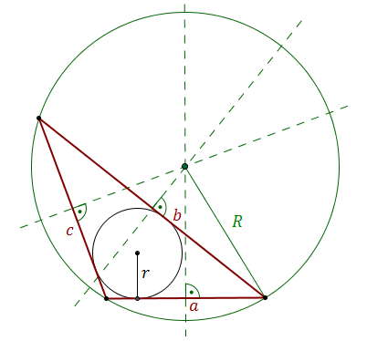

Na każdym trójkącie można opisać okrąg.
Środek
okręgu opisanego leży na przecięciu symetralnych boków trójkąta: 
Promień okręgu opisanego można obliczyć ze wzoru: \[R=\frac{abc}{4rp}\] gdzie:
\(a\), \(b\), \(c\) - to długości boków trójkąta,
\(r\) - to długość
promienia okręgu wpisanego w trójkąt,
\(p\) - to połowa obwodu trójkąta, czyli
\(p=\frac{a+b+c}{2}\).